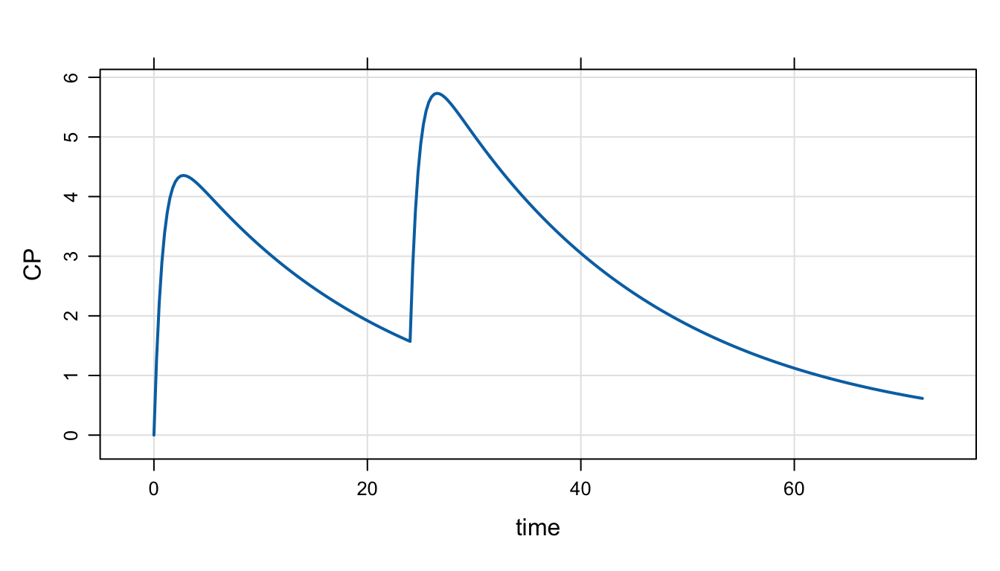
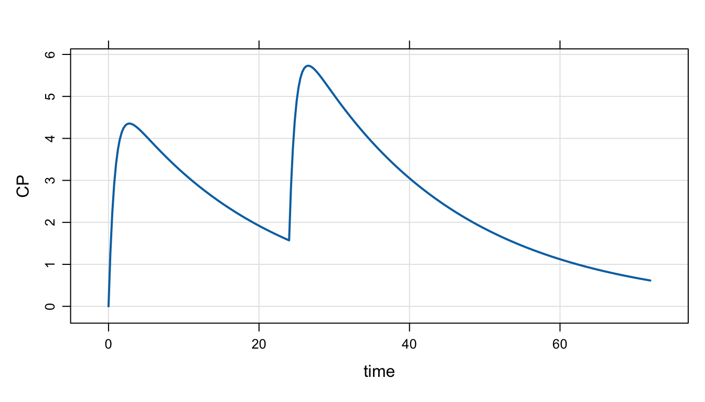
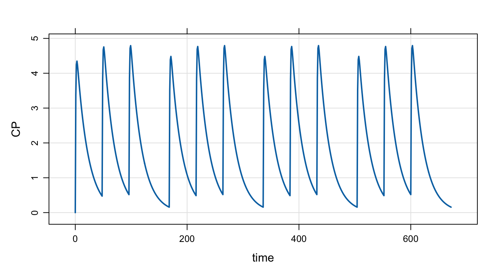

mod <- house(end = 72)
mod %>%
ev(amt = 100, ii = 24, addl = 1) %>%
mrgsim() %>%
plot("CP")
Event objects are similar to the data sets described in Chapter 4, but are simpler and easier to create. This is the fastest way to implement a basic intervention (like dosing) for a single “individual” into your model.
Event objects also offer an elegant way to compose complicated dosing regimens. Typically, the different parts of a regimen are composed as individual event objects and then combined to create a multi-faceted dose regiment.
Finally, once an event object is created (either simple or complex), this object can be “expanded” into multiple individuals to create a population data set for simulation.
See details in the subsequent sections.
Event objects are frequently used in a pipeline to simulate a dosing regimen. For example
mod <- house(end = 72)
mod %>%
ev(amt = 100, ii = 24, addl = 1) %>%
mrgsim() %>%
plot("CP")
This used the ev() constructor to make an event object for two 100 mg doses and this is passed into mrgsim() to implement this regimen.
Alternatively, we can create a standalone object containing the event information
regimen <- ev(amt = 100, ii = 24, addl = 1)and pass that into the simulation pipeline
mod %>% ev(regimen) %>% mrgsim() %>% plot("CP")If you are not using the pipe syntax, the following would be equivalent calls
mrgsim(mod, events = regimen) %>% plot("CP")And there are mrgsim() variants that explicitly accept an event object
mrgsim_e(mod, regimen) %>% plot("CP")More will be said about how to create and manipulate event objects in the following sections.
A new event object can be created with the ev() constructor. For a single, 100 mg dose it would be
e <- ev(amt = 100)When you print the object to the R console we see the 100 mg dose along with the following defaults
time set to 0cmt set to 1 (the first compartment)evid set to 1 (a bolus dose)e. Events:
. time amt cmt evid
. 1 0 100 1 1Of course, we can override any of these defaults or add additional items as needed. For a single 100 mg dose infused over 2 hours in compartment 2 one hour after the simulation starts
e <- ev(amt = 100, rate = 50, cmt = 2, time = 1)To use this event object, we can pass it into mrgsim() under the events argument
mod <- house(delta = 1, end = 24)
mrgsim(mod, events = e). Model: housemodel
. Dim: 26 x 7
. Time: 0 to 24
. ID: 1
. ID time GUT CENT RESP DV CP
. 1: 1 0 0 0.00 50.00 0.000 0.000
. 2: 1 1 0 0.00 50.00 0.000 0.000
. 3: 1 1 0 0.00 50.00 0.000 0.000
. 4: 1 2 0 48.77 44.12 2.439 2.439
. 5: 1 3 0 95.16 36.98 4.758 4.758
. 6: 1 4 0 90.52 34.61 4.526 4.526
. 7: 1 5 0 86.11 34.75 4.305 4.305
. 8: 1 6 0 81.91 35.22 4.095 4.095Event object inputs can be functions of previously defined inputs. For example
ev(amt = 100, rate = amt / 2). Events:
. time amt rate cmt evid
. 1 0 100 50 1 1See the ?ev() help topic for more information on additional arguments when constructing event objects. Here, I’d like to specifically highlight a handful of options that can be helpful when constructing event objects.
Infusion duration
Above, we created some infusion event objects by adding an infusion rate to the input. We can also indicate an infusion by adding an infusion time through the tinf argument
ev(amt = 100, tinf = 2). Events:
. time amt rate cmt evid tinf
. 1 0 100 50 1 1 2ID
While the primary use case for event objects are for single individuals, we can code a series of IDs into the object too
ev(amt = 100, ID = 1:3). Events:
. ID time amt cmt evid
. 1 1 0 100 1 1
. 2 2 0 100 1 1
. 3 3 0 100 1 1Here, we asked for 3 IDs in the object. Once this is turned into a simulation data set (see below), we’ll have a population data set from which to simulate.
Additional data items
We can also pass through arbitrary data columns through the event object. For example, we can pass through WT
ev(amt = 100, WT = 80). Events:
. time amt cmt evid WT
. 1 0 100 1 1 80As we noted, event objects are very similar to data sets and they are nothing but data sets under the hood. We can take the event objects we created above and coerce them to other objects.
Using as_data_set
as_data_set(e). ID time amt rate cmt evid
. 1 1 1 100 50 2 1This will ensure that there is an ID column in the output and it will be suitable to use for simulation.
Using as.data.frame
as.data.frame(e) %>% mutate(ID = 5). time amt rate cmt evid ID
. 1 1 100 50 2 1 5Upper case names
See Section 5.8 for a constructor for an event object that renders with upper case names.
There is a $ operator for event objects
e$amt. [1] 100Two or more event objects can be concatenated using the c operator
e1 <- ev(amt = 100)
e2 <- ev(amt = 200, time = 24)
c(e1, e2). Events:
. time amt cmt evid
. 1 0 100 1 1
. 2 24 200 1 1This essentially “rbinds” the rows of the individual event objects and sorts the rows by time.
NOTE: the result of this manipulation is another event object.
Event objects can also be combined to happen in a sequence. In the previous example, we wanted the 200 mg to happen at 24 hours and we had to code that fact into time accordingly.
By specifying a dosing interval (ii) we can ask mrgsolve to do that automatically by calling the seq() method.
e1 <- ev(amt = 100, ii = 24)
e2 <- ev(amt = 200, ii = 24)
seq(e1, e2). Events:
. time amt ii addl cmt evid
. 1 0 100 24 0 1 1
. 2 24 200 24 0 1 1This was a trivial example to get a simple result. We can try something more complicated to make the point
e3 <- ev(amt = 100, ii = 6, addl = 28)
e4 <- ev(amt = 200, ii = 12, addl = 124)
e5 <- ev(amt = 400, ii = 24, addl = 3)
seq(e3, e4, e5). Events:
. time amt ii addl cmt evid
. 1 0 100 6 28 1 1
. 2 174 200 12 124 1 1
. 3 1674 400 24 3 1 1NOTE: when mrgsolve puts event objects into a sequence, it starts the next segment of the regimen one dosing interval after the previous regimen finished. Going back to the simple example
seq(e1, e2). Events:
. time amt ii addl cmt evid
. 1 0 100 24 0 1 1
. 2 24 200 24 0 1 1e1 was just a single dose at time 0. mrgsolve will have e2 start one dosing interval (24 hours) after the last (only) dose in e1. We can alter the amount of time between segments of the regimen by using the wait argument. For example, to push e2 out by an additional 24 hours we’d use
seq(e1, wait = 24, e2). Events:
. time amt ii addl cmt evid
. 1 0 100 24 0 1 1
. 2 48 200 24 0 1 1We can also use a negative value for wait to make the next dose happen sooner
seq(e1, wait = -12, e2). Events:
. time amt ii addl cmt evid
. 1 0 100 24 0 1 1
. 2 12 200 24 0 1 1Finally, we should note that event objects can be used multiple times in a sequence
seq(e1, e2, wait = 7*24, e2, e1). Events:
. time amt ii addl cmt evid
. 1 0 100 24 0 1 1
. 2 24 200 24 0 1 1
. 3 216 200 24 0 1 1
. 4 240 100 24 0 1 1Like the seq() method for event objects, ev_repeat will put an event object into a sequence n times
ev_repeat(e1, n = 3). time amt ii cmt evid addl
. 1 0 100 24 1 1 0
. 2 24 100 24 1 1 0
. 3 48 100 24 1 1 0By default, this function returns a regular data frame. To return an event object instead call
ev_repeat(e1, n = 3, as.ev = TRUE)You can put a waiting period too. To illustrate this, let’s compose a more complicated regimen and repeat that
e1 <- ev(amt = 500, ii = 24)
e2 <- ev(amt = 250, ii = 24, addl = 5)
e3 <- ev_seq(e1, e2)
e3 %>% realize_addl(). Events:
. time amt ii addl cmt evid
. 1 0 500 0 0 1 1
. 2 24 250 0 0 1 1
. 3 48 250 0 0 1 1
. 4 72 250 0 0 1 1
. 5 96 250 0 0 1 1
. 6 120 250 0 0 1 1
. 7 144 250 0 0 1 1In this regimen, we have daily dosing for 7 doses. The last dose is given at 144 hours. When putting this into a sequence, we’ll wait one dosing interval and then the wait period and then start again
ev_repeat(e3, n = 3, wait = 7*24). time amt ii addl cmt evid
. 1 0 500 24 0 1 1
. 2 24 250 24 5 1 1
. 3 336 500 24 0 1 1
. 4 360 250 24 5 1 1
. 5 672 500 24 0 1 1
. 6 696 250 24 5 1 1data_setUse the as_data_set() function to combine multiple event objects or data frames into a single data set.
as_data_set(e1, e2). ID time amt ii addl cmt evid
. 1 1 0 500 24 0 1 1
. 2 2 0 250 24 5 1 1It’s important to note that
as_data_set(), you exit the event object worldIDRecall that we can create event objects with multiple IDs; as_data_set() is handy to use with this feature
as_data_set(
ev(amt = 100, ID = 1:3),
ev(amt = 200, ID = 1:3),
ev(amt = 300, ID = 1:2)
). ID time amt cmt evid
. 1 1 0 100 1 1
. 2 2 0 100 1 1
. 3 3 0 100 1 1
. 4 4 0 200 1 1
. 5 5 0 200 1 1
. 6 6 0 200 1 1
. 7 7 0 300 1 1
. 8 8 0 300 1 1Notice that as_data_set() has created unique IDs for the 3 subjects in the 100 mg group, the 3 subjects in the 200 mg group, and the 2 subjects in the 300 mg group.
We’ll cover a function called ev_rep() below to “expand” an event object to multiple individuals
as_data_set(
ev_rep(e1, 1:300),
ev_rep(e2, 1:300)
)If you want to combine objects with a mixture of lower and upper case names, the output object will be patterned after the first object you pass in. For example, the object created with the following code will have upper case names because we passed in the object created with evd() first.
as_data_set(
evd(amt = 10),
ev(amt = 100)
). ID TIME AMT CMT EVID
. 1 1 0 10 1 1
. 2 2 0 100 1 1With mrgsolve 1.5.1, we can also combine data frames with upper and lower case names
d1 <- ev_rep(ev(amt = 1000), 1:2)
d2 <- ev_rep(evd(amt = 100), 1:2)
as_data_set(d1, d2). ID time amt cmt evid
. 1 1 0 1000 1 1
. 2 2 0 1000 1 1
. 3 3 0 100 1 1
. 4 4 0 100 1 1We can also combine data frames and event objects. Because we are leading with d2 (created with evd()), the output will have upper case names.
as_data_set(d2, e1, d1, e2). ID TIME AMT II ADDL CMT EVID
. 1 1 0 100 0 0 1 1
. 2 2 0 100 0 0 1 1
. 3 3 0 500 24 0 1 1
. 4 4 0 1000 0 0 1 1
. 5 5 0 1000 0 0 1 1
. 6 6 0 250 24 5 1 1Event objects can be mutated
mutate(e, amt = 200). Events:
. time amt rate cmt evid
. 1 1 200 50 2 1Columns can be removed from event objects using select()
ev(amt = 100, WT = 50, AGE = 12) %>% select(-WT). Events:
. time amt cmt evid AGE
. 1 0 100 1 1 12Rows can be removed from event objects with filter()
e <- c(
ev(amt = 100),
ev(amt = 200, time = 12),
ev(amt = 300, time = 24)
)
filter(e, time <= 12). Events:
. time amt cmt evid
. 1 0 100 1 1
. 2 12 200 1 1“Additional” doses can be made explicit in an event object
ev(amt = 100, ii = 6, addl = 3) %>% realize_addl(). Events:
. time amt ii addl cmt evid
. 1 0 100 0 0 1 1
. 2 6 100 0 0 1 1
. 3 12 100 0 0 1 1
. 4 18 100 0 0 1 1Event objects can be “expanded” into multiple IDs to create a population; use the ev_rep() function for this.
ev(amt = 100) %>% ev_rep(1:5). ID time amt cmt evid
. 1 1 0 100 1 1
. 2 2 0 100 1 1
. 3 3 0 100 1 1
. 4 4 0 100 1 1
. 5 5 0 100 1 1By default, ev_rep() returns a regular data frame. You can request that an event object is returned
ev(amt = 100) %>% ev_rep(1:5, as.ev = TRUE)ev_rep() can work on an event object with any complexity.
mrgsolve has a couple of more creative ways to construct event objects.
ev_days() will create dosing sequences when dosing are on certain days (of the week). For example, to dose only on Monday, Wednesday, and Friday for on month
e <- ev_days(ev(amt = 100), ii = 168, addl = 3, days = "m,w,f")
e. time amt cmt evid ii addl
. 1 0 100 1 1 168 3
. 2 48 100 1 1 168 3
. 3 96 100 1 1 168 3We can see how this works by simulating the regimen
mrgsim_e(mod, e, end = 168*4) %>% plot("CP")
ev_rx() is a way to write a regimen out with notation similar to what you might see on a prescription. For example, 100 mg twice daily for 3 doses into compartment 2 would be
ev_rx("100 mg q12h x3 in 2"). Events:
. time amt ii addl cmt evid
. 1 0 100 12 2 2 1To code an infusion
ev_rx("500 mg over 2 hours q 24 h x3 in 1"). Events:
. time amt rate ii addl cmt evid
. 1 0 500 250 24 2 1 1See the ev_rx() documentation for more details and limitations.
You’ll notice in the previous sections that most of the column names were rendered with lower case letters when we convert the event object to a data set like object:
as.data.frame(ev(amt = 100)). time amt cmt evid
. 1 0 100 1 1And when this event object is use to simulate, you’ll see these lower case names in the simulated output. The reasons for this are historical and this behavior is unlikely to change because it goes so far back into the history of mrgsolve.
Nevertheless, recent versions of mrgsolve have included similar constructor functions that will render column names in upper case which are commonly seen in analysis data sets.
The evd() constructor behaves just like ev(), but it will render upper case names when coerced to a data set or used for simulation.
e <- evd(amt = 100)
e. Events Data:
. time amt cmt evid
. 1 0 100 1 1The d in evd() indicates that the event object will render with names like a Data set and you will see a reminder of the data set like nature of this object when it is printed.
When this object is rendered to a data frame, you will see the names rendered in upper case
as.data.frame(e). TIME AMT CMT EVID
. 1 0 100 1 1You can also coerce an event object created with ev() to one that behaves as if it were created via evd()
as.evd(ev(amt = 100)). Events Data:
. time amt cmt evid
. 1 0 100 1 1It is important to note that the case of the column names aren’t made upper case until the data frame is rendered. So, in the previous example, time and amt are in lower case because we have not rendered yet. If you want to work on this object before it is rendered, be sure to lower case names before rendering and upper case after rendering. For example we use rate in the the following example, not RATE:
evd(amt = 100) %>% mutate(rate = amt / 5). Events Data:
. time amt rate cmt evid
. 1 0 100 20 1 1You can coerce a traditional event object to a data like event object with
as.evd(ev(amt = 100)). Events Data:
. time amt cmt evid
. 1 0 100 1 1And finally, there are two utility functions for changing the names of a data like or event object. To convert to upper case use uctran()
ev(amt = 100) %>% as_data_set() %>% uctran(). ID TIME AMT CMT EVID
. 1 1 0 100 1 1To convert to lower case, use lctran()
evd(amt = 100) %>% as_data_set() %>% lctran(). ID time amt cmt evid
. 1 1 0 100 1 1The utility functions also work on event objects. For example,
ev(amt = 100) %>% uctran(). Events Data:
. time amt cmt evid
. 1 0 100 1 1